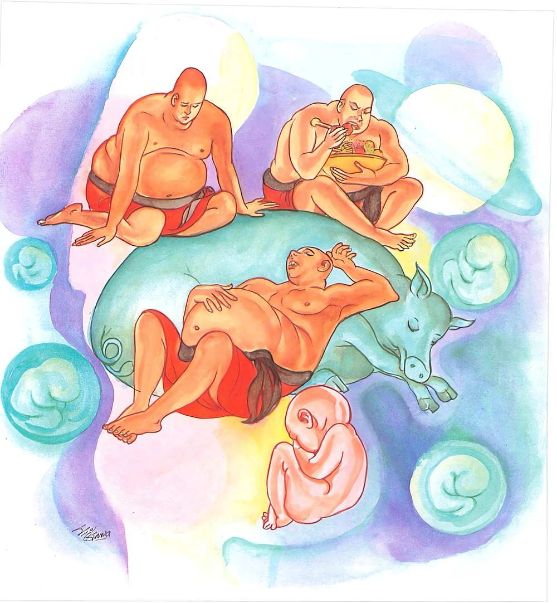

23-4 කොසොල් රජුගේ බත් බුදීම
මෙම කතාව ධම්මපද අටුවාවෙන් ද කියවන්න.
මිද්ධී යදා හොති මහග්ඝසො ච නිද්දායිතා සම්පරිවත්තසායී.
මහාවරාහො’ව නිවාපපුට්ඨො පුනප්පුනං ගබ්භමුපෙති මන්දො.
පුරුෂ තෙම යම් කලෙක මිද්ධබහුල (ථීනමිද්ධයෙන් මඩනා ලදුයේ) වේ ද, ( පමණ නොදැන බොහෝ කොට කන්නේ වේ ද, (කුඩු දඹුකඩ නියුඩු කැඳ ආදි) සූකරභක්තයෙන් පුස්නා ලද (ස්ථූල ශරීර ඇති) මහ ගම්හූරකු මෙන් (හුන් සිටි තැන) නිදන්නේ ම පෙරැළි පෙරැළි හෝනේ වේ ද, තිලකුණු මෙනෙහි කැරුමක් නැති ඒ අඥාන තෙම නැවැත නැවැත මවු කුසට එළැඹෙන්නේ ය (ගර්භවාසයෙන් නො මිදෙන්නේ ය).

කොසොල් රජ තෙමේ එක් කලෙක මගධ නැළීයෙන් සහල් සොළොස් නැළියකින් පිසූ බත්, ඒ බතට සෑහෙන පමණට පිසූ එළවළුත් සමග බුදින්නේ ය. රජ දවසක් උදෑසන බත් අනුභව කොට බත්මත සන්සිඳෙන්නට පෙරාතුව ම බුදුරජුන් වෙත ගොස් බඩ බර වූ බැවින් ගිලන් සැහැවි ඇතියේ සුසුම් ලමින් එහා මෙහා පෙරළෙමින් හුන්නේ ය. බුදුරජානන් වහන්සේ ඔහුගේ ඒ විලාසය දැක “මහරජ! බත්මත තිබිය දීම ආවහු?”යි අසා වදාළ කල්හි “ස්වාමීනි! එසේය, කෑම ගත් වේලෙහි පටන් මට මහාදුකෙකැ”යි කී ය. “මහරජ! පමණ ඉක්මවා බඩෙහි පමණ ගැණ නො තකා ආහාර අනුභව කිරීමෙන් ලැබෙන දුක ඉතා මහත් ය”යි වදාරා මේ ධර්මදේශනාව කළ සේක.
මිද්ධී යදා හොති මහග්ඝසො ච
නිද්දායිතා සම්පරිවත්තසායි,
මහාවරාහොව නිවාපපුට්ඨො
පුනප්පුනං ගබ්හමුපෙති මන්දොති.
යම් කලෙක පුරුෂ තෙමේ ථීනමිද්ධයෙන් මැඩුනේ වේ ද, බොහෝ කොට කන්නේ වේ ද, ඌරුකෑමෙන් පොෂණය කරණ ලද මහ ඌරකු නිදනුයේ පෙරැළී පෙරැළී වැද හෝනේ වේ ද, ඒ අඥ තෙමේ නැවැත නැවැත මවුගැබට පැමිණේ.
මිද්ධී යදා හොති මහග්ඝසො ච = යම් කලෙක පුරුෂ තෙමේ ථීනමිද්ධයෙන් මැඩුනේ වේ ද, බොහෝ කොට කන්නේ වේ ද.
මෙහි මිද්ධි යනු, ථීනමිද්ධයෙන් මැඩුනහු කෙරෙහි ආයේ ය. ථින නම්: සිතෙහි පණ නැතිබව ය. මිද්ධ නම්: කයෙහි පණ නැතිබව ය. කයෙහි පණ නැති බව සිතෙහි පණ නැති බවටත්, සිතෙහි පණ නැති බව කයෙහි පණ නැති බවටත් කරුණුව සිටුනා බැවින් මෙ දෙක එක්වට උපදනේ ය. මිද්ධය කියූ තැන ථීනයත්, ථීනය කියූ තැන මිද්ධයත් ගතයුතු ය. එහෙයින් මිද්ධි යන මෙයට ථීන මිද්ධයෙක් මැඩුනේ ය යි කියන ලදි. [1]
මහග්ඝස්ස නම්: ආහාරහත්ථක - අලංසාටක - තත්රවට්ටක - කාකමාසක - භුත්තවමිතක යන මොවුන් මෙන් බඩ පමණ ඉක්මවා බත් ගිලින්නේ ය. [2]
නිද්දායිතා සම්පරිවත්තසායි මහාවරාහො ඉව නිවාපපුට්ඨො = ඌරුකෑමෙන් පුස්නාලද මහඌරකු මෙන් නිදන්නේ වේ ද, පෙරැළි පෙරැළී වැද හෝනේ වේ ද.
නිද්දායිතා නම්: කුඩා කල පටන් කා බී වැඩී ගිය මහගම්හූරකු සේ ගොරොව ගොරොවා හුන් සිටි තැන නිදන්නේ ය.
කඳබඩ බර ව ගිය බැවින් තර ව ගිය බැවින් ඉතා මද වේලාවකුදු එක් ඉරියව්වෙකින් සිටිනු නො හැකි ව හැම අතට පෙරැළි පෙරැළි නිදන්නේ ‘ සම්පරිවත්තසායී’ය.
කඳබඩ මහත් ව ගිය බැවින් හුන් සිටි තැනින් සෙලවෙන්නට නො හැකිව සිටුනා මහගම්හූරු ‘මහාවරාහ’ නම්:
කුඩු - දම්කොඩ - නිවුඩු කැඳ - දොවුන්දිය ආදී වූ ඌරුකෑම නිවාප නම්: එය කාබී පොහොනියට ගියේ එයින් පුස්නාලදුයේ ‘ නිවාපපුට්ඨ’ ය.
පුනප්පුනං ගබ්භං උපෙති මන්දො = එකල්හි ඒ අඥ තෙමේ නැවැත නැවැත මවුගැබට පැමිණේ.
ථින මිද්ධයෙන් මැඩුනු නිතර නිදන බඩ පමණ ඉක්මවා බත් බුදින මහගම්හූරකු සේ හුන් සිටි තැන නිදන කඳබඩ මහත් බැවින් පෙරැළි පෙරැළී සුසුම් ලමින් ගොරොව ගොරොවා නිදන අනිත්ය - දුඃඛ - අනාත්ම විසින් තිලකුණු මෙනෙහි නො කොට හැකි වූ එහෙයින් අඥාන වූ මිනිසා පුනපුනා පිළිසිඳ ගැණීම් විසින් මවුගැබට පැමිණෙන්නේ ය. “නැවැත නැවැත මවුගැබට පැමිණෙන්නේ ය” යනු සසර දිගින් දිගට ජාතියෙන් ජාතිය උපදින්නේ ය, යනු ය.
ධර්මදේශනාවගේ අවසානයෙහි බුදුරජානන් වහන්සේ රජුට උපකාර පිණිස “හැම කල්හි සිහි ඇති බොජුනෙහි පමණ දත් මිනිසාගේ බතින් හට ගන්නා වූ වේදනාවෝ තුනී වයන්නාහ, වැළඳූ බොජුන ද ආයුෂ රැක දෙමින් වහා දිරා යන්නේ ය” යන අර්ත්ථවත් =
“මනූජස්ස සදා සතීමතො මත්තං ජානතො ලද්ධභොජනෙ,
තනූ තස්ස භවන්ති වෙදනා සනිකං ජිරති ආයු පාලයං”
යන මේ ගාථාව උත්තරමාණවකයාහට උගන්වා “රජු අහර ගන්නා තැන සිට මෙය කියව, එවිට අහර ගැණීම අඩු කරණු ඇතැ”යි වදාළ සේක. මාණවක එසේ කෙළේය. රජු ද අහර ගැණීම අඩු කරණුයේ නැළියක බතින් සෑහීමට පත් වූයේ ය. එයින් සුවපත් වූයේ බුදුරජුන් කෙරෙහි විස්වස් ඇතියේ අසදිස මහාදානය පැවැත් වී ය.
ප්රසේනජිත් කෝශල රාජ වස්තුව නිමි.